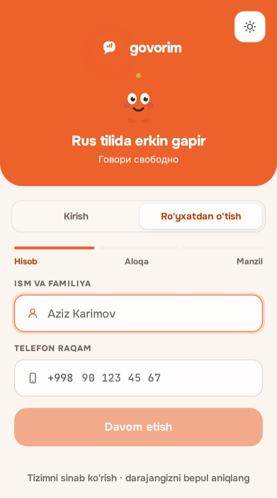
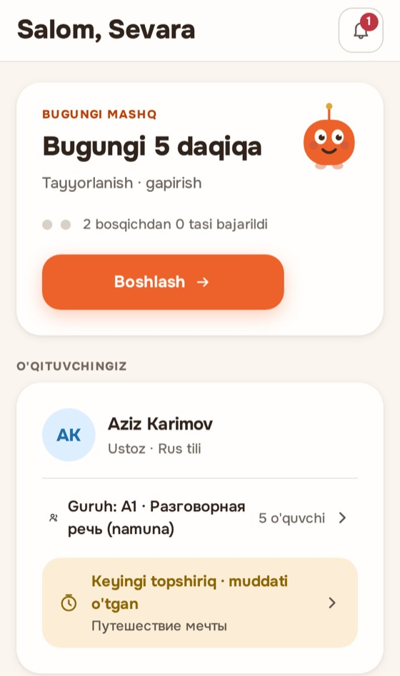
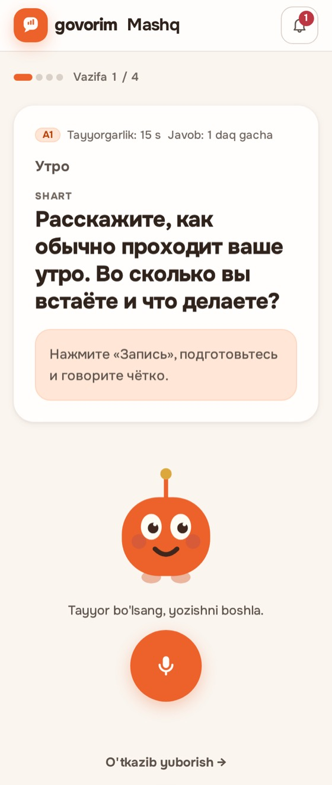

Siz savolga ovoz bilan javob berasiz, sun’iy intellekt (AI) javobingizni baholaydi, o‘qituvchingiz esa tekshiradi. Bu qo‘llanma qadamma-qadam, oddiy tilda.

O‘qituvchingiz sizga havola yoki guruh kodi beradi. Ikkalasidan bittasi yetarli.

Bir nechta o‘qituvchida o‘qisangiz, har birining havolasini oching — bir nechta guruhda bo‘lish mumkin. Guruhdan chiqish: Profil → Ma’lumot → Guruhdan chiqish.
Pastdagi menyuda 5 ta bo‘lim bor:
| Bo‘lim | Nima bor |
|---|---|
| Bosh | O‘qituvchingiz, keyingi topshiriq, darajangiz va seriyangiz (necha kun ketma-ket mashq qilganingiz). |
| Mashq | Modullar — mavzular bo‘yicha vazifalar. Topshiriqlar — o‘qituvchi bergan vazifalar va muddatlari. |
| O‘rtadagi mikrofon | AI Suhbat — sun’iy intellekt bilan suhbat (dorixonada, taksida va h.k.), agar yoqilgan bo‘lsa. |
| Progress | Ko‘nikmalaringiz, yutuqlaringiz va reyting. |
| Profil | Ism, rasm, telefon raqam, natijalaringiz, til, chiqish. |

Keyin: Qayta urinish yoki Keyingi vazifa →. Barcha natijalaringiz: Profil → Natijalar.
| Belgi | Ma’nosi |
|---|---|
| ✓ va ball | Bajarilgan |
| Boshlash | Hozir bajarish mumkin |
| Yopiq | Avval oldingi vazifani bajaring — vazifalar tartib bilan ochiladi |
| Pro | Premium kerak (6-bo‘lim) |
Saytga yozgan raqamingiz Telegram’ingiz ochilgan raqamdan farq qiladi. Saytda Raqamni qaytadan kiritish ni bosing va Telegram’dagi raqamingizni yozing.
Telegram’ni Play Market yoki App Store’dan o‘rnating va telefon raqamingiz bilan oching. Govorim’ga kirish faqat Telegram orqali ishlaydi.
Parol yo‘q — eslab qolish ham shart emas. Har safar raqam va Telegram kodi bilan kirasiz.
Profil → Ma’lumot → Telefon raqamni o‘zgartirish → yangi raqamni yozing → kod yangi raqamning Telegram’iga keladi → tasdiqlang. Eski raqamga kira olmasangiz — o‘qituvchingiz yoki adminga yozing.
Kodni bir necha marta xato yozgansiz. Ekranda yozilgan daqiqalarni kuting va qayta urinib ko‘ring.
Admin hisobingizni vaqtincha yopgan. O‘qituvchingiz yoki adminga murojaat qiling.
O‘qituvchi so‘rovingizni hali tasdiqlamagan. Bosh sahifada «So‘rov yuborildi» yozuvi tursa — hammasi to‘g‘ri, kuting yoki o‘qituvchiga eslatib qo‘ying.
Kodni harfma-harf tekshiring. O‘qituvchi kodni yangilagan bo‘lsa, eskisi ishlamaydi — yangi kodni so‘rang.
Brauzerda manzil qatoridagi qulf belgisini bosing → Mikrofon → Ruxsat berish. Sahifani yangilang. Telefonda brauzer sozlamalarida ham mikrofonga ruxsat bo‘lishi kerak.
Javobingiz saqlangan — qayta yuborish shart emas. Natija keyinroq Profil → Natijalar’da chiqadi.
Balandroq va mikrofonga yaqinroq gapiring, shovqinsiz joyda Qayta urinish ni bosing. Baholanmagan urinish urinishlar soniga kirmaydi. Takrorlansa — o‘qituvchingizga ayting.
Hali vazifalar qo‘shilmagan. O‘qituvchingiz yoki admin kontent qo‘shgach paydo bo‘ladi.
Profil → Sozlamalar → Chiqish. Begona telefon yoki kompyuterdan kirgan bo‘lsangiz, albatta chiqib qo‘ying.
Profil → Sozlamalar → Yordam markazi orqali Telegram’da adminga yozing.